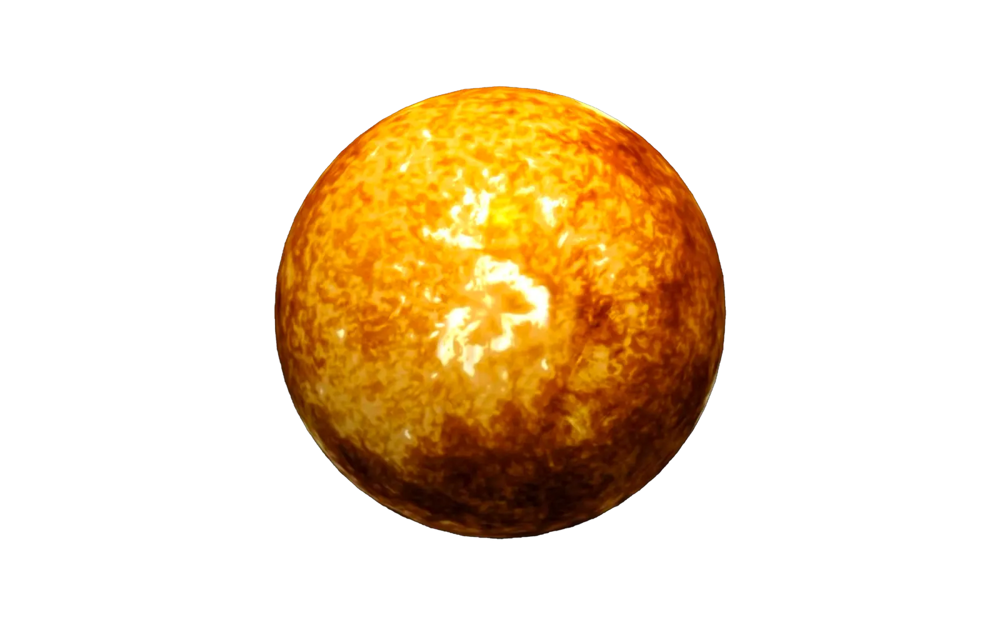

← Side projects/ 04 of 08
Physical computing · 2024
Digital Sun
Shine a light on a sensor and a 3D sun on screen gets brighter. Light is the only input.

The idea
Physical light, digital sun
Made for a Physical Computing course, where the brief was a physical input that controls a digital 3D object in real time.
A photoresistor reads light in the room. Arduino sends the values over serial to TouchDesigner, where they drive the brightness and intensity of a 3D sun. More light in the room, brighter sun; less light, darker sun.
Hardware
Five parts on a breadboard
- Arduino board
- Photoresistor
- Resistor
- Breadboard
- Jumper cables
The photoresistor measures light as an analog value, and Arduino reads it and sends it to the computer continuously.
Code
From a number to a glow
On the Arduino side I read the analog value, normalized it, and sent it over serial.
In TouchDesigner I received the live data, smoothed it, and mapped it to the light and brightness of the 3D sun.
Interaction
Bring your own light
A flashlight, a desk lamp or the light in the room changes how the sun behaves.
No keyboard, no mouse, no touch. Just light.
It shows the core loop of physical computing in one small system: sensing, sending data, and responding visually in real time.
Next side project · 05
Crisis Type
Climate words transformed through coded, reactive letterforms.